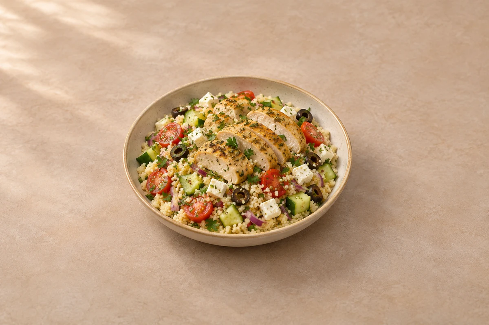

Lunches
Greek Chicken Couscous Salad
Lemon and oregano chicken breast with fluffy couscous, cucumber, tomatoes, feta and olives. Serves 2.
Ingredient quantities update automatically

Ingredients
Chicken and couscous
Salad and dressing
Method
Prepare the couscous
Put the couscous in a heatproof bowl, pour over the hot vegetable stock and cover. Leave for about 5 minutes, or follow your packet instructions if they specify a different liquid ratio or soaking time. Fluff with a fork and spread out slightly to cool.Season the chicken
Slice thick chicken breasts horizontally into thinner cutlets. Rub with half the olive oil, the oregano and garlic granules, then season lightly with salt and pepper.Cook and rest
Heat a frying pan over a medium-high heat. Cook the chicken for about 4–6 minutes per side, depending on thickness, until golden and cooked through. Rest for 5 minutes, then slice.Prepare the salad
Dice the cucumber and red onion, halve the tomatoes, slice the olives and chop the parsley. Crumble the feta.Dress the couscous
Mix the lemon juice with the remaining olive oil and a little black pepper. Toss through the fluffed couscous, cucumber, tomatoes, onion, olives and most of the parsley. Taste before adding salt because the stock, feta and olives are already salty.Finish the bowls
Divide the couscous salad between bowls. Add the sliced chicken and feta, then scatter over the remaining parsley. Serve warm or at room temperature.
Tips & leftovers
Storage & leftovers
Cool the chicken and couscous promptly in separate shallow containers, then refrigerate. Keep the cucumber, tomato, feta and dressing separate where possible and use everything within 48 hours of cooking. Assemble when ready to eat.
Freezing
Freeze cooled cooked chicken and plain couscous in separate labelled portions for up to 2 months for best quality. Add fresh cucumber, tomato, herbs, feta and dressing after defrosting; the finished salad is best not frozen.
Reheating
The chilled salad can be eaten cold. For a warm version, reheat only the chicken and plain couscous until steaming hot throughout, adding a splash of water and stirring the couscous. Add the cold salad ingredients afterwards. Reheat only once.
Substitutions
Use cooked quinoa instead of couscous, following its packet for liquid and cooking time; cool it promptly. Swap feta for a similar salad cheese, or leave out the olives and add extra tomatoes. For a meat-free version, use drained chickpeas instead of chicken.
Keeping leftovers safe
Cool cooked leftovers in small portions and refrigerate within 2 hours. Keep the fridge at 0–5°C and the freezer around −18°C. Freeze suitable leftovers promptly. Defrost fully in the fridge and use within 24 hours. Reheat only once, until steaming hot all the way through. Follow any shorter use-by or opened-pack instructions; using older cooked ingredients does not restart their storage time.
Food-safety guidance: Food Standards Agency: chilling and freezing · reheating leftovers.